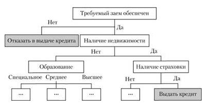

@@include('_base_head.html')
Лекция 5. Современные подходы к управлению производственными процессами. Бизнес-ориентированные системы: ERP, CRM и др.
1. Подходы управления производственными процессами
1.1 Функциональный подход
До начала 80-х годов подавляющее большинство компаний управлялись так называемым функциональным образом. Суть функционального подхода к управлению заключается в управлении наборами функций. Весь набор активностей организации разбивается на наборы функций (однородных и специализированных), которые сосредотачиваются в отдельных подразделениях. Подразделения выстраиваются в иерархические структуры. Управление такой структурой и сводится фактически к управлению функциями. Этот подход довольно прост и понятен сотрудникам организаций, легко усваивается и тиражируется по горизонтали и вертикали путем наращивания иерархий. Он был вполне оправдан в условиях постоянно увеличивающегося спроса, ускоряющего рост компаний, при наличии гарантированных рынков сбыта.
Однако в начале 80-х годов рынки наполнились, резко усилилась конкурентная борьба, борьба за клиента (покупателя). Организации стали активно искать пути радикального повышения эффективности деятельности. Новые условия продиктовали новые правила игры – снижение стоимости продукции при повышении ее качества и обеспечение гибкой и быстрой реакции компании на постоянно изменяющиеся внешние воздействия рынка.Это привело к появлению новых подходов к управлению. Наибольшее развитие получил процессный подход.
1.2. Процессный (процессно-ориентированный, Бизнес-ориентированный) подход
Суть процессного подхода состоит в следующем. Вся деятельность сотрудников компании состоит из двух видов активностей: повторяющихся (которые приходится осуществлять периодически либо в случае наступления определенных событий) и “разовых”, уникальных по составу, которые не повторяются в дальнейшем в таком виде. Первый вид активностей называется процессами, второй – мероприятиями, проектами, программами и т.п. Если это так, то управлять деятельностью компании – значит управлять ее процессами (Process Management) и проектами (Project Management).
В основе процессно-ориентированного подхода в управлении организацией лежит понятие процесса: это связанный набор повторяемых действий (функций), которые преобразуют исходный материал и (или) информацию в конечный продукт (услугу) в соответствии с предварительно установленными правилами.
Бизнес-система — связанное и полное множество бизнес-процессов, реализуемых в рамках одной организационно оформленной бизнес-единицы при достижении её целей.
Бизнес-процесс (БП) включает в себя взаимосвязанные действия, которые реализуют одну (или несколько) из бизнес-целей компании в информационной системе компании.
Бизнес-система представляет собой категорию процессной модели предприятия, выраженную с помощью системного подхода в рамках процессного управления. Иногда бизнес-систему представляют в виде дерева бизнес-процессов, хотя на самом деле бизнес-система имеет более сложную структуру и обладает более сложными и не всегда однозначными связями, в отличие от простой иерархической структуры. Система бизнес-процессов пересекается с системой стратегического управления предприятием, а именно, с деревом целей. Дерево целей разворачивается от миссии через стратегические цели к оперативным целям предприятия, а оперативные цели, в свою очередь, реализуются с помощью бизнес-процессов.
Бизнес-система проектируется с помощью модели предприятия, или системы моделей бизнес-процессов. Бизнес-процессы также могут быть связаны друг с другом посредством декомпозиции, т.е. они могут быть вложены друг в друга.
Существуют различные подходы к проектированию бизнес-систем. Среди них можно выделить следующие два:
- объектно-ориентированный, рассматривающий организацию как набор взаимосвязанных объектов, между которыми распределяется ответственность. К достоинствам этого подхода можно отнести устойчивость модели и четкое отражение организационной структуры
- функциональный, в соответствии с которым бизнес-система представляется набором функций, каждая из которых преобразует некоторые входные данные в выходные. Данный подход может использоваться в компаниях со слабо оформленной организационной структурой
2. Системы управления производственными процессами
Появление в начале 80-х персональных компьютеров позволило автоматизировать ведение учета и обработку данных даже небольшим компаниям, не имеющим высококвалифицированного управленческого и технического персонала.
Сначала появились системы автоматизации внутренних (бэк-офисных) процессов, прежде всего производства (управление запасами и автоматизация управления производственными линиями) и бухгалтерского учета.
Затем пришел черед процессов взаимосвязи с внешней средой (процессы фронт-офиса): поставок, продаж, услуг, маркетинга.
В конце двадцатого века организации перешли к автоматизации перекрестных процессов, затрагивающих работу несколько подразделений, внедряя технологии управления взаимоотношениями с клиентами (Customer Relationship Management - CRM), и технологии управления цепочками поставок (Supply Chain Management - SCM). И, наконец, вершина пирамиды - это корпоративное управление.
Основой КИС предприятий на современном этапе являются так называемые системы планирования ресурсов предприятий (Enterprise Recourse Planning - ERP). Мировой опыт свидетельствует, что умело выбранная и внедренная ERP-система существенно улучшает управляемость предприятием и повышает эффективность его работы. Построение корпоративной информационной системы должно начинаться с анализа структуры управления организацией и соответствующих потоков данных и информации. Координация работы всех подразделений организации осуществляется через органы управления разного уровня.
Под управлением понимают обеспечение поставленной цели при условии реализации следующих основных функций: организационной, плановой, учетной, анализа, контрольной, стимулирования.
Рисунок 1. Эволюция развития систем управления предприятия
В настоящее время в мировой практике для обозначения полнофункциональных интегрированных АСУ, используемых предприятиями, применяют следующие названия:
MRP (Material Requirement Planning - Планирование материальных потребностей),
MRP II (Manufacturing Resource Planning - Планирование производственных ресурсов),
ERP-система (Enterprise Resource Planning -Планирование ресурсов предприятия),
ERP-II и CSRP (Customer Synchronized Relationship Planning - Планирование ресурсов, синхронизированное с покупателем).
Какая-либо однозначная и общепринятая общая классификация ИТ- предприятий отсутствует. Возможный вариант обобщенной структуры современных информационных технологий, внедряемых на промышленных производствах различного типа, приведен на рис. 2, на котором сделаны следующие общепринятые сокращения:

Рисунок 2. Обобщенная структура информационных технологий предприятия
- САПР- системы автоматизированного проектирования/изготовления (Computer Aided Design / Computer Aided Manufacturing - CAD/CAM);
- АСТПП -автоматизированные системы технологической подготовки производства (Computer Aided Engineering - CAE);
- АСУТП- автоматизированные системы управления технологическими процессами (Supervisory Control And Data Acquisition - SCADA);
- АСУП - комплекснаяавтоматизированная система управления предприятием (Enterprise Resource Planning - ERP)
- WF - потоки работ(WorkFlow);
- CRM- управление отношениями с клиентами;
- B2B- электронная торговая площадка ("онлайновый бизнес");
- DSS- поддержка принятия управленческих решений;
- SPSS - статистический анализданных;
- OLAP- анализ многомерных данных;
- MIS- управляющая информационная система, (АРМ) руководителя;
- SCM- управление цепями поставок;
- PLM- управление жизненным циклом продукции (характерно для дискретного производства);
- ERP-II - расширениеERP-системы за контуры производства (т. е. ERP + CRM + B2B + DSS + SCM+ PLM и т. п.);
- HR - "Управление персоналом"; можно рассматривать и как самостоятельную задачу, и как входящую в составERP (что и отображено на рисунке в виде двух связей);
- LAN- локальные вычислительные сети (Local Area Net);
- WAN- глобальные (внешние) сети и телекоммуникации (Wide Area Net).
2.1. MRP (Materials Resource Planning - планирование материальных ресурсов)
К концу 80-х годов идея создания единой модели данных в рамках целого предприятия заинтересовала ряд международных промышленных компаний, которые искали способ упростить управление производственными процессами. Первым шагом в данном направлении стала разработка концепции MRP (Materials Resource Planning - планирование материальных ресурсов), рассматривавшей планирование материалов для производства.
Основная цель концепции MRP заключалась в минимизации издержек, связанных со складскими запасами (в том числе и на различных участках производства). В основе этой концепции лежит понятие ВОМ (Bill Of Material - спецификация изделия, ответственность за которую возложена на конструкторский отдел), отражающее зависимость спроса на сырье, полуфабрикаты и другие продукты от плана выпуска готовой продукции. При этом очень важную роль играет время, для учета которого необходимо иметь четкое представление о технологической цепочке выпуска продукции, то есть знать, какова последовательность и длительность операций. На основании плана выпуска продукции, ВОМ и технологической цепочки осуществляется расчет потребности в материалах к конкретным срокам.
2.2. MRPII (Manufacturing Resource Planning - планирование производственных ресурсов)
Однако у концепции MRP есть серьезный недостаток. Дело в том, что при расчете в рамках этой концепции потребности в материалах не учитываются ни имеющиеся производственные мощности, ни их загрузка, ни стоимость рабочей силы. Этот недостаток был исправлен в концепции MRPII (Manufacturing Resource Planning - планирование производственных ресурсов). MRPII позволяла учитывать и планировать все производственные ресурсы предприятия - сырье, материалы, оборудование, персонал и т.д.
По мере развития концепции MRPII к ней постепенно добавлялись возможности учета остальных затрат предприятия. Так появилась концепция ERP
2.3. ERP (Enterprise Resource Planning - планирование ресурсов предприятия)
Концепция ERP (Enterprise Resource Planning - планирование ресурсов предприятия), называемая иногда также планированием ресурсов в масштабе предприятия (Enterprise-wide Resource Planning). В основе ERP лежит принцип создания единого хранилища данных (репозитария), содержащего всю деловую информацию, накопленную организацией в процессе ведения бизнеса, в частности, финансовую информацию, данные, связанные с производством, управлением персоналом, и любые другие данные. Наличие репозитария избавляет от необходимости передавать данные от приложения к приложению.
Рисунок 3. Развитие стандарта ERP
Стандарт ERP позволил объединить все ресурсы предприятия и повысить эффективность управления ими.
Рисунок 4. Схема взаимодействия процессов
В настоящее время практически все современные западные системы управления производством базируются на концепции ERP и отвечают ее рекомендациям.
На мировом рынке сейчас предлагается свыше 500 систем класса MRPII - ERP. Развитие этого рынка идет очень быстрыми темпами - число внедрений таких систем в мире растет на 35-40% в год. На отечественном же рынке сейчас присутствуют около десятка западных систем и три-четыре отечественные системы класса КИС (корпоративные информационные системы). Они представлены в таблице 1.
Тиражируемые интегрированные системы управления предприятием (ИСУП),
представленные на рынке СНГ.
Таблица 1
|
|
Название тиражируемой ИСУП
|
Класс
|
Фирма-поставщик в России
|
|
ИСУП для крупных предприятий
|
R/3
|
ERP
|
SAP
|
|
Baan
|
ERP
|
Альфа-Интегратор - Баан Евразия
|
|
Oracle Applications
|
ERP
|
Oracle CIS
|
|
OneWorld J.D. Edwards
|
ERP
|
Robertson & Blums
|
|
ИСУП для средних предприятий
|
SyteLine (разработчик — Symix)
|
CSRP
|
Socap
|
|
MAX (разработчик - MAX International)
|
ERP
|
ICL-КПО ВС (Казань)
|
|
Mfg/Pro (разработчик - QAD)
|
ERP
|
BMS
|
|
iRenaissance CS (разработчик - Ross Systems)
|
ERP
|
«Интерфейс»
|
|
IFS (Industrial & Financial Systems)
|
ERP
|
«Форс»
|
|
PRMS (разработчик - Computer Associates)
|
ERP
|
R-Style
|
|
Axapta (разработчик - Damgaard, Дания)
|
ERP
|
Columbus IT Partner
|
|
ИСУП для малых и средних предприятий
|
Concorde XAL (разработчик - Damgaard, Дания)
|
ERP
|
Columbus IT Partner
|
|
Exact
|
ERP
|
Exact Software
|
|
Platinum ERA
|
ERP
|
Platinum Software
|
|
Scala
|
ERP
|
Scala CIS
|
|
LS LIPro Systems (разработчик - LIPro Systems, Германия)
|
ERP
|
«ЛИПро Р»
|
|
Protean (разработчик - Wonderware)
|
|
PLC Systems
|
|
NS-2000 (разработчик «Никос-Софт») + Solagem Enterprise (разработчик — Solagem OY)
|
ERP
|
«Никос-Софт»
|
|
«БОСС-Корпорация» (с модулем «Производство»)
|
MRP
|
«АйТи»
|
|
Парус 8.х
|
MRP
|
«Парус»
|
|
БЭСТ-ПРО 3.02
|
MRP II
|
«Интеллект-Сервис»
|
|
SunSystems (фирмы Systems Union) + RB Manufacturing (разработчик – Robertson & Blums)
|
MRP
|
Robertson & Blums
|
|
«Галактика»
|
|
«Галактика»
|
|
М-2
|
MRP
|
«Клиент-серверные технологии»
|
|
АС+
|
MRP
|
«Борлас»
|
|
«1С:Предприятие» (с модулем «Производство»)
|
|
«1С»
|
2.4. CSRP (Customer Synchronized Resource Planning)
Стандарт системы управления предприятиями - CSRP (Customer Synchronized Resource Planning) - помимо всего прочего охватывает и взаимодействие с клиентами, оформление нарядов/заказов и технических заданий, поддержку заказчика на местах и т.д. Таким образом, если стандарты MRP, MRPII и ERP ориентированы на внутреннюю организацию предприятия, то стандарт CSRP включает в себя полный цикл - от проектирования будущего изделия, с учетом требований заказчика, до гарантийного и сервисного обслуживания после продажи. Суть концепции CSRP главным образом состоит в том, чтобы интегрировать заказчика (клиента, покупателя) в систему управления предприятием. Согласно данной концепции не отдел сбыта, а непосредственно сам покупатель размещает заказ на изготовление продукции, сам отвечает за правильность его исполнения и при необходимости отслеживает соблюдение сроков производства и поставки.
При этом само предприятие может очень четко отслеживать тенденции спроса на его продукцию.
2.5. Системы управления активами и фондами (ЕАМ)
Системы управления активами и фондами EAM (Enterprise Asset Management) представляет собой интегрированный, ориентированный на активы/фонды подход к управлению производственной деятельностью, позволяющий предприятиям с большими вложениями в основные средства значительно увеличить чистую прибыль.
Системы управления активами и фондами предприятия — это новая и быстро растущая категория систем, отвечающая специфическим требованиям к технологиям капиталоемких предприятий. В таблице 2 приведены основные отличия подхода ЕАМ от MRP/ERP.
Под активами и фондами понимается все, что требуется для обеспечения работы предприятия (люди, деньги, оборудование, машины, материально-производственные запасы, здания и сооружения, инструменты и т. д.).
ЕАМ-системы применяются в таких отраслях, как горнодобывающая промышленность, обрабатывающая промышленность, транспорт и перевозки, оборонная промышленность, а также на предприятиях по эксплуатации инженерных коммуникаций, коммунальных предприятиях, вырабатывающих, поставляющих и распределяющих газ, воду, электроэнергию и т.п. Они обеспечивают управление полным жизненным циклом фондов/активов с использованием управления прогнозированным и превентивным техническим обслуживанием, управления материалами, кадрами, производственной и финансовой деятельностью. Обычно такие системы включают следующие основные модули:
- управление производственной деятельностью, техническим обслуживанием и ремонтом;
- управление материалами;
- управление персоналом;
- управление финансами.
Таблица 2. Основные отличия подхода ЕАМ от MRP/ERP
|
MRP/ERP
|
ЕАМ
|
|
Ориентация на продукт
|
Ориентация на процесс
|
|
Производство оборудования
|
Эксплуатация оборудования
|
|
Материалы, необходимые для производства новых товаров
|
Материалы, требуемые для поддержания существующих активов
|
|
Рабочие задания инициируются необходимостью создать новые изделия
|
Рабочие задания инициируются необходимостью в ремонте, перестройке или техническом обслуживании активов
|
|
Статичный лист заказа материалов маленькие изменения в типах материалов в зависимости от задания
|
Динамичный список заказа, основанный на различных типах проектов, работ и конфигурации оборудования
|
|
Большие объемы относительно небольшого количества деталей от нескольких производителей
|
Небольшие объемы очень большого числа деталей от многих производителей и поставщиков
|
|
В производстве людей занято больше, чем в техническом обслуживании
|
В техническом обслуживании людей занято больше, чем в производстве
|
|
Материалы закупаются на основе прогноза продаж
|
Материалы закупаются на основе спланированного технического обслуживания, ремонтной истории и статистики использования материально
производственных запасов
|
|
Относительно простой список материалов, определяемый заказами на отделку продукции
|
Крайне сложный список материалов для разных типов оборудования и работ
|
|
Легко предсказать потребность в материалах на основе прогноза продаж
|
Трудно предсказать потребность в материалах на основе выходов из строя и состояния оборудования
|
2.6. CRM системы (Customer Relationship Management) - Системы управления продажами, маркетингом, отношениями с клиентами.
CRM системы (Customer Relationship Management) - Системы управления продажами, маркетингом, отношениями с клиентами. Управление отношениями с клиентами (Customer Relations Management, CRM) — это стратегия, основанная на применении новых управленческих и информационных технологий, с помощью которых компании аккумулируют знания о клиентах для выстраивания взаимовыгодных отношений с ними. Подобные отношения способствуют увеличению прибыли, т.к. привлекают новых клиентов и помогают удержать старых.
Информационная система CRM. Стратегия CRM реализуется с помощью специального набора программного обеспечения (ПО) и технологий, позволяющих автоматизировать, а значит, совершенствовать бизнес-процессы в сфере продаж, маркетинга и обслуживания клиентов. Это дает возможность компании обращаться к заказчикам услуг с предложениями в наиболее удобный момент времени и по наиболее удобным каналам связи. Система CRM облегчает координацию действий различных отделов, обеспечивая их общей платформой для взаимодействия с клиентами, и дает каждому из них доступ к полной информации о них, что способствует наилучшему удовлетворению потребностей клиентов.
Основная функциональность большинства CRM-систем оформляется в виде следующих самостоятельных компонентов:
- автоматизация продаж (Sales Force Automation — SFA);
- автоматизация маркетинга (Marketing Automation — MA);
- автоматизация обслуживания клиентов (Customer Service & Support — CSS);
- средства анализа и построения отчетов.
Основой системы CRM являются приложения автоматизации продаж (Sales Force Automation, SFA). На них возлагаются следующие функции:
- ведение календаря событий и планирование работы;
- управление контактами (благодаря ему ни один важный звонок или личное обращение не будут пропущены);
- работа с клиентами (каждый клиент будет обслужен на высочайшем уровне, благодаря зафиксированной истории взаимодействия с ним);
- мониторинг потенциальных продаж (ни одна потенциальная возможность не будет упущена, каким бы плотным не было расписание сотрудника);
- поточная организация продаж (эффективное управление циклом продаж);
- повышение точности прогнозов продаж;
- автоматическая подготовка коммерческих предложений (освобождает сотрудников от рутинной работы);
- предоставление информации о ценах;
- автоматическое обновление данных о размере бонуса в зависимости от выполнения поставленных задач;
- предоставление актуальной информации о состоянии дел в региональных представительствах;
- формирование отчетов (эффективный инструментарий автоматического создания отчетов по результатам деятельности);
- организация продаж по телефону (создание и распределение списка потенциальных клиентов, автоматический набор номера, регистрация звонков, прием заказов).
SFA дополняется sales-конфигуратором, позволяющим конфигурировать те или иные продукты из компонентов. Правила конфигурирования заложены в самом приложении, что дает возможность клиентам производить покупки через Интернет.
Автоматизация маркетинга. В современных CRM-системах SFA-приложения дополняются средствами автоматизации маркетинга (Marketing Automation, MA), они позволяют:
- организовывать маркетинговые кампании (предусмотрены инструменты планирования, разработки, проведения и анализа результатов маркетинговых акций, как традиционных, так и через Интернет);
- создавать маркетинговые материалы и управлять ими (в том числе заниматься автоматической рассылкой);
- генерировать список целевой аудитории (создание списков потенциальных клиентов и их распределение между торговыми представителями);
- отслеживать бюджетирование и прогнозирование результатов маркетинговых кампаний;
- вести маркетинговую энциклопедию (репозиторий информации о продуктах, ценах и конкурентах).
Автоматизация обслуживания клиентов. Приложения автоматизации обслуживания и поддержки клиентов (Customer Service & Support, CSS) в последнее время приобрели первостепенное значение, так как в условиях жесткой конкуренции удержать прибыльного клиента можно прежде всего благодаря высокому качеству обслуживания. Как правило, к этой категории приложений относятся средства обработки вызовов и самообслуживания через Интернет. Приложения CSS позволяют удовлетворять индивидуальные потребности заказчиков быстро, точно и эффективно, обеспечивая выполнение следующих функций:
- мониторинг потребностей клиента (сотрудники отдела обслуживания всегда в курсе проблем и предпочтений того или иного покупателя услуг);
- мониторинг прохождения заявок (процесс отслеживается автоматически);
- мониторинг мобильных продаж (в любой момент времени можно получить информацию о качестве выполнения услуги, ее стоимости, удовлетворенности клиентов, сроках выполнения заявки и др.);
- ведение базы знаний (эффективный инструмент снижения себестоимости услуг — большинство проблем могут быть решены во время первого звонка клиента);
- контроль за исполнением сервисных соглашений (автоматическое отслеживание сроков и условий);
- управление запросами клиентов с помощью присвоения приоритетов.
Приложения CSS превращают отделы обслуживания клиентов из затратных в прибыльные. Будучи интегрированными с приложениями SFA и МА, они способствуют тому, чтобы каждый контакт клиента с компанией был использован для продажи дополнительных услуг (cross-sell) и более дорогих продуктов (up-sell).
Современные классификации выделяют три следующих типа CRM-систем:
- оперативная CRM — обеспечивает оперативный доступ к информации по конкретному клиенту в процессе взаимодействия с ним в рамках традиционных бизнес-процессов продажи и послепродажного обслуживания. Ее функциональность охватывает маркетинг, продажи и сервис, что соответствует стадиям привлечения клиента, акта совершения сделки и послепродажного обслуживания, т. е. все те точки контакта, где осуществляется взаимодействие предприятия с клиентом;
- аналитическая CRM — обеспечивает синхронизацию разрозненных массивов данных и поиск статистических закономерностей в этих данных для выработки наиболее эффективной стратегии маркетинга, продаж, обслуживания клиентов и т. п.
- коллаборационная CRM — предоставляет клиенту возможность непосредственного участия в процессе дизайна, производства доставки и обслуживания продукта (сбор предложений клиентов при дизайне продукта, доступ клиентов к прототипам продукции и возможность обратной связи, реверсивное ценообразование — когда клиент описывает требования к продукту и определяет цену, которую он готов заплатить, а производитель реагирует на эти предложения).
В настоящее время прослеживается тенденция включения функциональности CRM-компонентов в ERP-системы различного класса (от систем, предназначенных для крупных предприятий, до систем, ориентированных на средние и мелкие). Подобная интеграция позволяет:
- обеспечить совместное использование данных о клиенте, собираемых разными компонентами;
- расширить рамки системы управления ресурсами предприятия, включив в нее заказчиков, поставщиков, партнеров, и, как следствие, снизить издержки предприятия на продажи, поставки, маркетинг;
- ориентировать бизнес-процессы предприятия на наиболее полное и оперативное удовлетворение потребностей клиента за счет включения его заказов в систему производственного планирования;
- улучшить каналы взаимодействия клиента с предприятием, сделав их максимально удобными и предоставив клиенту возможности персонального обслуживания и самообслуживания.
2.7 Системы управления цепочками поставок (SCM)
Системы управления цепочками поставок SCM (Supply Chain Management) поддерживают технологию управления, реализующую концепцию CSRP (Customer Synchronized Resource Planning), которая предполагает наличие возможностей управления внешними по отношению к предприятию элементами производственной цепочки, а именно системой материальных потоков в сети поставщиков сырья и комплектующих. В ведении SCM-систем находится рассмотрение логистических операций на протяжении полного жизненного цикла изделия, т.е. процесс разработки, производства, продажи и послепродажного обслуживания.
Следует отметить, что управление цепочками поставок является одним из наиболее сложных и трудоемких бизнес-процессов в условиях многопрофильных предприятий. Интеграция поставщиков, производителей продукции, дилеров, транспортных и финансовых компаний, участвующих в цепочках поставок, оказывается крайне затруднительной из-за несовместимых организационных, управленческих, информационных и других систем.
Идея управления цепочками поставок достаточно проста, в ее основе лежат следующие очевидные факты:
- стоимость товара формируется на протяжении всей цепочки поставок;
- на стоимость товара оказывает влияние не только и не столько эффективность операций по конкретной продаже, сколько общая эффективность операций по всей цепочке поставок;
- наиболее управляемыми с точки зрения стоимости являются начальные звенья цепочки поставок, связанные с производством товара, а наиболее чувствительными — заключительные звенья, связанные с его продажей.
Поэтому в SCM-системах акцент делается на поддержке процессов планирования производства и дистрибуции (проектирование сети цепочек, планирование и прогноз спроса, планирование снабжения и сбыта, планирование и составление графиков производства), а также поддержке процессов обеспечения выполнения поставок с ориентацией на ежедневное управление сбытом (ресурсы, перевозки, логистика, склад).
Традиционная функциональность SCM-системы включает в себя:
- планирование и прогнозирование спроса;
- выбор поставщиков и управление закупками;
- обработку/выполнение заказа и послепродажное обслуживание;
- управление складами;
- управление отгрузкой и транспортировкой;
- производственную логистику;
- расчеты;
- анализ эффективности отдельных элементов системы поставок.
Внедрение SCM-систем позволяет предприятию сократить стоимость и время обработки заказа, время выхода товара на рынок, затраты на закупки сырья и комплектующих, уменьшить складские запасы, сократить производственные затраты и в конечном счете увеличить прибыль.
2.8. Системы управления бизнес-правилами, BRM-системы (Business Rule Management System)
Стратегический уровень руководства предприятием в иерархии информационных систем использует в числе прочих системы управления бизнес-правилами, BRM-системы (Business Rule Management System (BRMS)), предназначенные для создания и использования модели, формально описывающей логику принятия решений в виде системы бизнес-правил – утверждений в терминах бизнес-пользователей, указывающих на выполнение некоторых действий в случае выполнения определенных условий.
BRMS (англ. Business Rule Management System — система управления бизнес-правилами) — информационная система, используемая для ведения, поддержки и исполнения бизнес-правил компании.
В традиционных ИТ-системах бизнес-правила заложены внутрь технического кода, который доступен для понимания только ИТ-специалистам, что затрудняет их понимание бизнес-пользователями и требует перенастройки всего ИТ-цикла даже при небольших изменениях.
В общем виде бизнес-правило представляется в форме утверждения вида:
Если (условия), то (список действий), иначе (альтернативный список действий).
В системах управления бизнес-правилами предприятия они рассматриваются как управляемые на протяжении всего их жизненного цикла активы, что предполагает использование кардинально отличающихся от традиционного подхода стратегий, основными из которых являются:
1) выделение бизнес-правил в централизованное хранилище правил;
2) возможность для бизнес-пользователей быть авторами изменений.
Бизнес-правила в BRMS объединяются в блоки в виде таблиц или деревьев решений (графическое изображение процесса принятия решений, в котором отражены альтернативные решения, альтернативные состояния среды, соответствующие вероятности и выигрыши для любых комбинаций альтернатив и состояний среды (рисунок 5).

Рисунок 5. Пример дерева решений на выдачу кредита
BRM-система позволяет гибко автоматизировать логику принятия решений в рамках бизнес-процессов компании на основе совершенствования уже работающих в организации приложений управления бизнес-правилами и эффективной совместной деятельности бизнес-пользователей и ИТ-специалистов. Доступность правил позволяет бизнес-пользователям быстро выполнять изменения. Результатом становится повышение гибкости бизнеса, быстрое реагирование на динамику рынка и предоставление клиентам новых возможностей. BRMS хранит всю историю изменения бизнес-логики.
Основными преимуществами использования BRMS являются:
- повышение адаптивности и оперативности реакции информационной среды компании на изменения в стратегии бизнеса за счет вовлечения бизнес-пользователей в процесс управления бизнес-правилами;
- снижение затрат на адаптацию систем к изменившимся условиям бизнеса;
- повышение прозрачности логики принятия решений в компании и ее аудита;
- возможность реализации системного подхода к управлению принятием решений в организации.
Использование систем управления бизнес-правилами является важной частью системы управления принятием решений в организации (СППР). Примеры систем BRM: ILOG JRules, JBoss Drools.
Критерии выбора систем управления ресурсами предприятий
В настоящее время на рынке представлено большое количество систем управления ресурсами предприятий (отличающихся стоимостью, количеством поддерживаемых функций, специализацией по отраслям и / или видам производства, средствами анализа и формирования отчетности и т. п.), характеризующихся управлением практически всеми видами деятельности и всеми видами ресурсов, первичностью производственных процессов (а не бухгалтерского учета), возможностью охвата корпораций, холдингов и т. п., а не отдельных предприятий. Перечислим наиболее значимые критерии выбора такой системы:
- соответствие требованиям вышеперечисленных общепринятых стандартов и методологий управления производством;
- наличие отраслевой специфики;
- удовлетворение корпоративным стандартам (стандартам уровня предприятия);
- наличие высокоуровневых средств разработки, позволяющих добавлять новую функциональность и / или модифицировать существующую;
- возможность интеграции с другими приложениями (в том числе и с унаследованными системами);
- наличие реализованных проектов для аналогичных предприятий;
- практический опыт реализации проектов компанией, осуществляющей внедрение.
@@include('_base_foot.html')